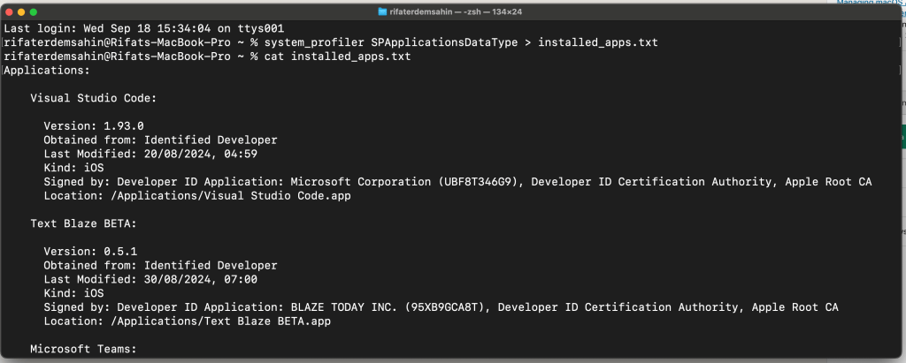
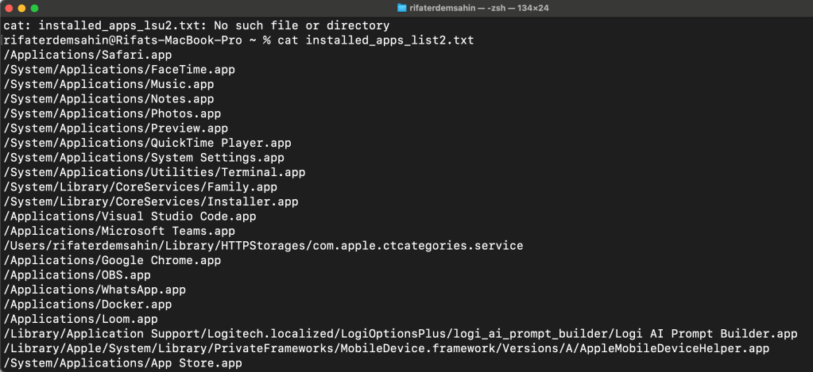
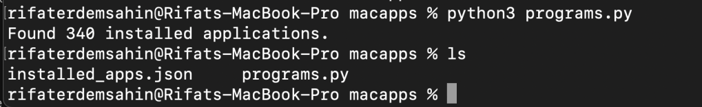
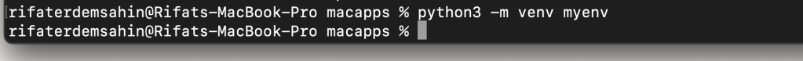
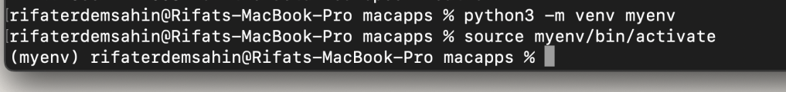
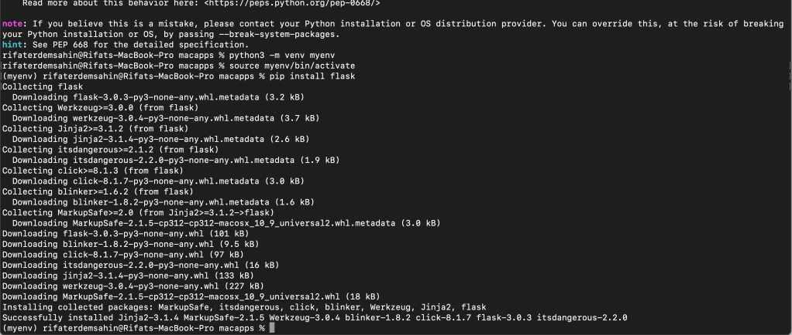
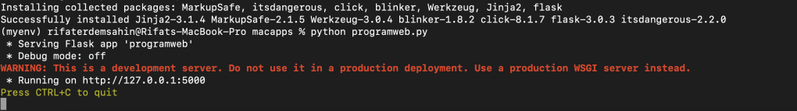
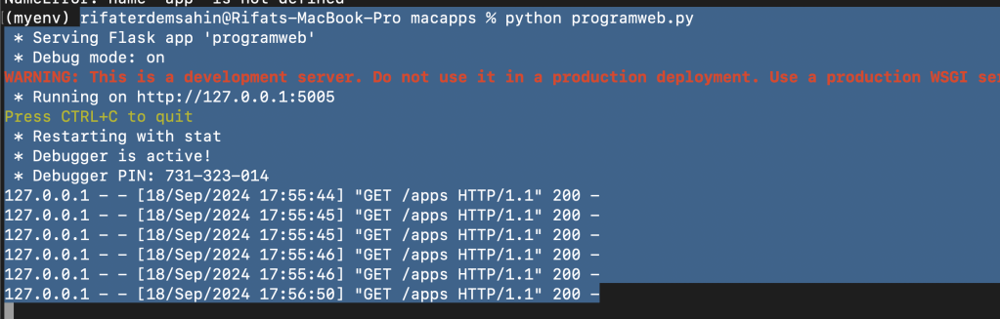

Managing macOS Apps: A Proof of Concept for System Monitoring and Reporting 📱💻
Managing installed applications on your macOS can get tricky, especially when you want to track what's installed, manage updates, and remove unnecessary apps. 😅 But fear not! I’ve got a solution for you — a simple Proof of Concept (PoC) that automates the process of monitoring installed applications, reporting on them, and even automating some management tasks.
Let’s dive in! 🏊♂️
1. Gathering Information about Installed Apps 📦
First things first, we need to gather information about what’s installed on your system. Fortunately, macOS has built-in commands that allow you to do just that. Here’s a quick trick using system_profiler to get the details you need:
system_profiler SPApplicationsDataType > installed_apps.txt

Alternatively, you can use Spotlight's mdfind:
mdfind 'kMDItemKind == "Application"' > installed_apps_list.txt
Boom! 💥 You now have a list of installed applications that you can use for reporting. Want more structure? Let’s convert that into a JSON file for easier processing! 👇

2. Storing App Data in JSON for Easy Reporting 📊
Once we’ve got the list, it’s time to store that information in a more structured format like JSON. With Python, this becomes super easy! 🐍
Here’s a Python snippet that runs system_profiler and saves the app data into a JSON file:
import os
import subprocess
import json
def get_installed_apps():
# Run system_profiler to get installed apps
result = subprocess.run(['system_profiler', 'SPApplicationsDataType', '-json'], capture_output=True, text=True)
# Parse the JSON output
installed_apps = json.loads(result.stdout)
# Save to a JSON file for reporting
with open('installed_apps.json', 'w') as f:
json.dump(installed_apps, f, indent=4)
return installed_apps
installed_apps = get_installed_apps()
print(f"Found {len(installed_apps['SPApplicationsDataType'])} installed applications.")

Now, your installed apps are saved in installed_apps.json for easy viewing and reporting later on. 📁✨
3. Automating App Management ⚙️
Want to remove apps automatically or run updates? 🎯 You can use Homebrew or macOS commands to manage the apps installed on your system.
To uninstall an app via brew, simply run:
brew uninstall
For system apps (which might require admin permissions), you can go the more direct route:
sudo rm -rf /Applications/
🛠️ By using Python scripts, you can automate these tasks, running bulk app removals or checking for outdated apps that you haven’t touched in a while.
4. Reporting with a Simple UI 🖥️
Why stop at command-line tools? We can get fancy and build a small web interface to view your installed apps in your browser. With Flask (a lightweight Python web framework), you can display the app data directly in your browser:
from flask import Flask, jsonify
app = Flask(name)
@app.route('/apps', methods=['GET'])
def get_apps():
with open('installed_apps.json') as f:
apps = json.load(f)
return jsonify(apps)
if name == 'main':
app.run(port=5000)
After running this, visit http://localhost:5000/apps, and you’ll have a sleek JSON view of all installed apps in your browser! 🌐💻
The error you're encountering (ModuleNotFoundError: No module named 'flask') indicates that the Flask module is not installed in your Python environment.
To resolve this, you need to install Flask. You can do this by running the following command:
pip install flask
If you're using Python 3, make sure to use pip3:
pip3 install flask
Once Flask is installed, you should be able to run your programweb.py without issues:
python3 programweb.py
If you encounter further issues, feel free to reach out!
Bonus Features 🎁
Here are a few extra ideas to enhance your app management system:
-
Automated Updates: Use brew or Mac App Store CLI (
mas) to check for available app updates and apply them. 🚀 -
Scheduled Reports: Run the script regularly and send email reports of installed apps and their statuses. 📅✉️
-
Alerts for Critical Updates: Integrate with macOS notification systems to alert you when critical updates are available for important apps. 🚨🔔
Conclusion 🎉
With this PoC, you now have a basic system in place for managing and reporting on installed applications on your macOS system. Whether you’re looking to automate updates, uninstall unused apps, or generate regular reports, this solution gives you a foundation to build on. 🏗️
Go ahead, give it a try, and take control of your macOS app ecosystem like a pro! 🚀
The error message you're seeing indicates that macOS has an externally managed Python environment. This is related to recent changes in how macOS manages Python installations to prevent conflicts with system packages. To safely install packages like Flask, it's recommended to use a virtual environment.
Here are the steps to set up and use a virtual environment, which will allow you to install Flask and other packages without affecting the system Python installation:
Step 1: Create a Virtual Environment
Run the following command to create a new virtual environment:
python3 -m venv myenv
This creates a directory called myenv that contains a standalone Python installation.

Step 2: Activate the Virtual Environment
To activate the virtual environment, use the following command:
source myenv/bin/activate
Once activated, your terminal prompt should change to indicate that you are now working inside the virtual environment (e.g., (myenv)).

Step 3: Install Flask
Now that the virtual environment is activated, you can install Flask without any restrictions:
pip install flask

Step 4: Run Your Flask App
With Flask installed in the virtual environment, you can now run your Flask app:
python programweb.py

Step 5: Deactivate the Virtual Environment (Optional)
When you’re done working in the virtual environment, you can deactivate it by running:
deactivate
This will return your terminal to the system Python environment.
By using a virtual environment, you keep your system's Python environment clean and avoid potential conflicts. Let me know if you encounter any issues!
The error you're seeing ("error": "apps.html") likely means that Flask cannot find the apps.html file in the templates directory. Here’s how you can troubleshoot and fix this issue:
Steps to fix:
- Ensure Directory Structure:
Flask looks for templates inside a folder namedtemplatesby default. Make sure your directory structure is like this:
/your_project_directory/
app.py # Your Flask application file
installed_apps.json # Your JSON file
/templates/
apps.html # Your HTML file
The apps.html file must be inside the templates folder, and both the app.py and installed_apps.json should be in the root of your project directory.
- Move the HTML File:
If your HTML is not already inside thetemplatesfolder, create the folder and place yourapps.htmlfile there.
mkdir templates
touch templates/apps.html
Copy the HTML code I provided earlier into the apps.html file.
-
Check Flask Configuration:
If you are running the Flask application in a non-standard way, ensure Flask is configured to look for templates in the correct location. By default, Flask will look in thetemplatesfolder, so this step should not be necessary unless you’ve customized the template path. -
Verify the Correct Template Path:
In the code, you are usingrender_template('apps.html'). This assumes that the file is intemplates/apps.html. Double-check that the filename matches exactly. -
Enable Debugging:
If you're not already doing so, run Flask in debug mode. This will give you more detailed error information in the browser and console.
if name == 'main':
app.run(port=5005, debug=True)
- Check the Console Logs:
When Flask is running in debug mode, check the console for more detailed error messages. It should tell you exactly why it cannot find the template.
If everything is in place and the template is correctly located, Flask should be able to load apps.html without any issues. Let me know how it goes!

Imported from rifaterdemsahin.com · 2025